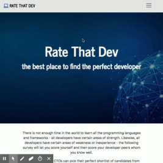
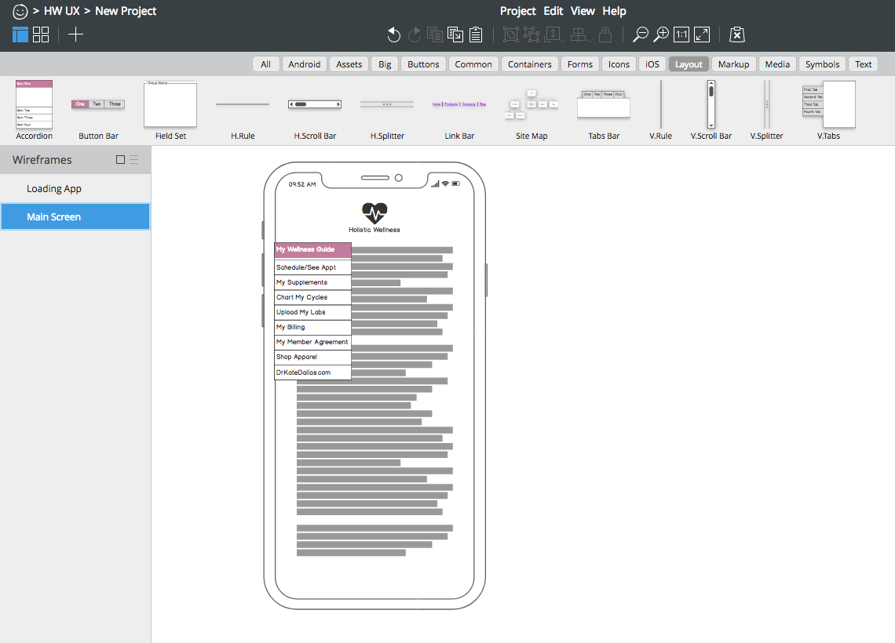
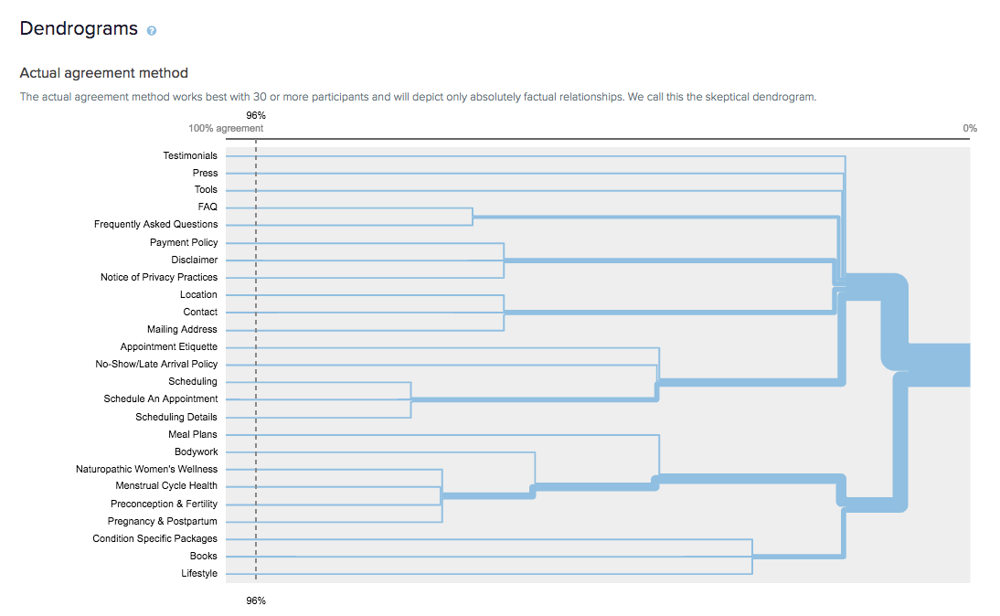

Accomplishments
- Designed interactions in Digital and Physical spaces to deliver frictionless user/client experiences that routinely exceed Health & Wellness Industry norms
- Initiated, developed, and launched an online platform that supports health and wellness practices following in-depth discovery sessions.
- Incorporated e-commerce and systemized scheduling.
- Analyzed performance data by evaluating measurable statistics, identifying trends, and redirecting focus to areas in need of improvement; obtained critical feedback from consumers to service their product needs.
- Achieved desired results through supervision of strategic planning, goal-setting, and design of brand.
- Managed a team of cross-functional staff.
- Notably increased satisfaction and retention levels by simplifying end-user navigation.
- Enhanced exposure through use of SEO keywords.
- Upheld HIPAA regulations by implementing security and handling sensitive information with discretion.
- Thrived under pressure and deliver industry-quality products within given deadlines; led successful launches.
- Remain updated on consistently evolving business and design practices to sustain a competitive edge.
Business Analysis · Market Research · Analytics & Content Auditing · Competitor Research · Client/Stakeholder Interaction & Interviewing · Questionnaires · Observation · Empathy Maps · Personas · User Journeys · Ideation · Concept Organization · Information Architecture · Product Management · Wireframing · Paper Prototyping · HTML Prototyping · CopyWriting · Bootstrap · Basalmiq · Sketch · HTML · CSS · Javascript · ReactJS · Node.js · NPM · yarn · Git · Slack · Responsive Design · Testing & Debugging · Data/Feedback Interpretation · Content Management · Wordpress · Agile (JIRA) · Lean UX · Google Suite · Adaptability · Design Thinking · Communication · Problem Solving · Collaboration & Teamwork · Self-Awareness
Work Samples
{kind=link}
Empathy Maps
Understanding our users' motivations
#discovery #research #observation
{kind=link}
Personas
Who are our different users?
#UXpressia
{kind=link}
Customer Journey Maps
Looking at every step along the way...
#Service Design #UXpressia
{kind=link}
Card Sorting
Organizing information
#OptimalSort
Copywriting
Compelling written and spoken communication
#GoogleDocs #Wordpress #Powerpoint #BrandIdentity
{kind=link}
Wireframing
Communicating ideas quickly
paper, whiteboard or digital
#Balsamiq #Sketch #paper
{kind=link}
Information Architecture
Mental Models, Conceptual Models, User Flows, Sitemaps
#GoogleDocs, Wordpress
Coding
Prototyping in code
#html #css #reactjs #node #git
Download my UX Resume
Bachelors, Music Composition
Certificate, Full Stack Web Development
Case Studies
 Rate That Dev :
[Use the App]
 Members Only App :
[User Stories]
 Website IA :
Additional Work Samples